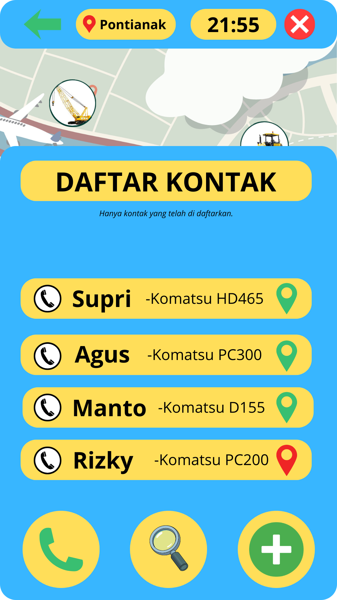
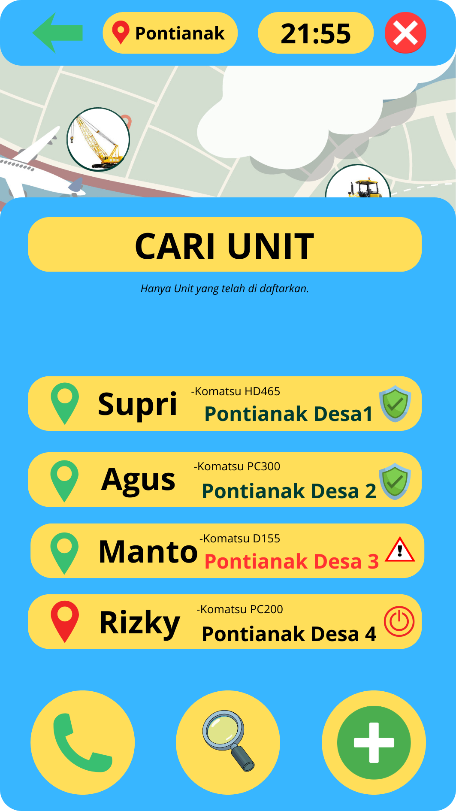
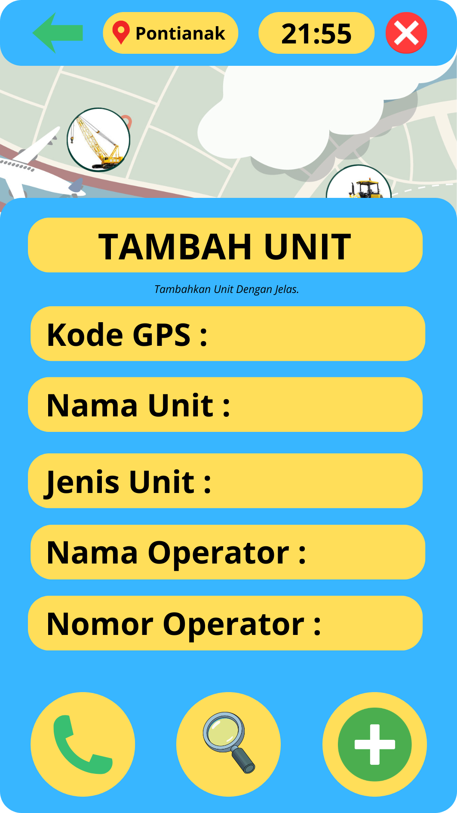

Tampilan Aplikasi
Klik gambar untuk melihat detail tampilan aplikasi.

Tampilan Menu Utama
Illustration

Tampilan Menu Telfon
Graphic Design

Tampilan Menu Cari Unit
Website Design

Tampilan Menu Tambah Unit
Photography